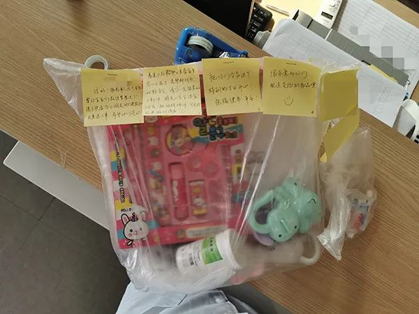

「 隔离日记 」 20200201
原文链接 备份链接 播放音乐 | 阅读效果更佳 感谢 | 您对霍超LEGAL的关注、阅读与分享 昨天，许多关心和关注我的人看到推送，给予我鼓励和安慰，收到祝福的消息太多，以至于一时让我有些手足无措，没能及时回复还望谅解，在此必须再说一句感 …
澎湃新闻见习记者 陈少颖 记者 高文
在上海市嘉定区，一栋被改造成集中医学观察点的楼房，成为了来往“房客”临时的家。
马陆镇社区卫生中心医生陆萍是该观察点的负责人，从1月26日开始，除了中途休息过一天，她每天都住在这里。在这一个月的时间里，发生着大大小小的故事。
“全身起了荨麻疹，比较烦人”
早上八点，前台的电话响了。
“陆医生，我忽然起皮疹了。”坤仔（化名）有些着急。
“别急，先微信拍照给我看看。”陆萍说。
从坤仔发的照片看，他身上、头上都有大面积的风团样红疹。陆萍是全科副主任医师，她初步诊断是荨麻疹。不过考虑到突发荨麻疹的严重程度，她立即将照片传到了嘉定区中心医院，请皮肤科专家会诊。专家开药后，医护人员一边给坤仔送去已储备的西替利嗪，一边前往医院配另一种药物。

医护人员为被观察人员测量体温。 本文图均为 马陆镇社区卫生中心 供图
第二天一早，坤仔的病情未有好转。考虑到坤仔说起以前也有过相关病史，但是没有查到过敏原。陆萍收到微信后，赶紧联系区卫健委，安排坤仔前往瑞金医院北院就诊。
坤仔独居一间客房进行医学观察，突发的身体状况让他时不时感到烦躁：“隔离其实还好，搞个荨麻疹出来，还全身都是，就比较烦人。”
陆萍知道封闭式空间带来的压力，发微信劝导他：“荨麻疹和精神紧张也有关系，这里有专业的医护人员在，放轻松。”
坤仔用药后病情有所好转，但由于情绪和压力比较大，药物一减量，荨麻疹又复发了，医护人员安排他又去专科医院进行了诊治。三回九转，坤仔离开时荨麻疹基本已被控制，也平稳地解除了隔离观察。
陆萍告诉澎湃新闻记者，隔离医学观察期间难免有突发情况，医护人员会时刻关注在此居住的“房客”身体状况，尤其是慢性疾病患者。他们给怀孕28周孕期的孕妇额外配送营养食物；为尿毒症患者邀请肾内科专家会诊，购买腹透液和重组人促红素注射液，及时处置病情，还为患者准备了血压仪用于自测，纸条上写着“战疫必胜，一起加油”。

医护人员为尿毒症患者准备了血压仪。
“我真怀疑我染上了”
“陆医生，我真怀疑我染上了，只是初期没症状而已。”李女士给陆萍发了微信。
这天晚上7点多，李女士咳了口痰，忽然发现痰里有血丝。想到自己有武汉旅行史，神经一下子紧绷了起来。
陆萍听了李女士的描述，“没有明显的新冠肺炎症状，先用药看看。”于是她安慰李女士，为她送上了一些口服药。
第二天，李女士的身体情况有所好转，然而到了晚上10点，再次咳了一口带血丝的痰，“我这是真得了吧。”加上些许肠胃不适，李女士吓得不轻。
尽管医护人员判断李女士的症状是由轻度支气管炎导致，但也不得大意。连夜，医护人员们将李女士送至嘉定区中心医院，医院为李女士做了CT、血常规检查，所幸排除了感染新冠肺炎的可能性。
接她回来时，已是凌晨两点半。
“焦虑和恐慌的情绪我们都能理解。”陆萍说，“积极的心理暗示和调节也很重要。”
“我想我这是病毒性的，要是普通的支气管炎吃药早好了……”“等隔离快到期了会有事吗？”面对李女士的种种焦虑，陆萍安慰道：“检查下来都没问题，如果不放心还是可以再次检查，一切都会好起来的。我这几天太累，也喉咙痛了，和你一样，吃了药就好多了。”
李女士终于松了口气，心情渐渐放松下来。
解除医学观察后，李女士给陆萍在微信上留言：“我已经回到家了，一切皆好。”
做到“平稳”却并不是一件容易的事
“我们需要做的，就是确保他们能平稳、健康地离开这里。”陆萍说。14天的时间不长不短，而做到“平稳”却并不是一件容易的事。

被观察人员默默点了奶茶送给医护人员和工作人员。
有人带了鲜肉回上海，担心肉质要坏了；有人因为要上班，提出要提前离开；有人因为过敏性体质，提出要回家隔离；有人带着2岁的孩子，需要特殊的照顾；也有人正在进行医学观察，默默点了二十几杯奶茶送给医护人员和工作人员，外卖单备注上写着：“辛苦了亲爱的小哥哥小姐姐！元宵节快乐哦！”

医护人员日常防护。
回想起观察点工作刚开始的时候，陆萍感叹：“刚开始进入隔离点工作，大家都没什么经验，工作分工不是很细。”1月25日，马陆镇社区卫生服务中心收到进驻集中医学观察点的命令，当天团队集结完毕，16名医护人员入驻。他们不仅负责医学观察，还承担了客房服务、送餐、清洁、维修、垃圾清运等工作。根据防疫要求，入住人员的物品只能通过楼梯运输。他们把垃圾一层层背下来，穿着防护服，里面的衣服湿了又干、干了又湿。

医护人员为小朋友送上生日礼物。
“后来更多的志愿者、保安、警察、联勤加入到我们团队，职责分工就更加明确了，我们就负责专业的工作。”陆萍介绍，为了舒缓入住人员的情绪，嘉定精神卫生中心的医生和社工提前介入，给每位人员发放温馨告知，让大家知晓隔离意义，进行心理辅导。小朋友生日的时候，精神卫生中心的医护人员为他们送上了适合的玩具和文具，写道：“很抱歉这个生日要让宝宝们在这里度过了，祝你们全家这个特别的生日开心！祝福健康、平安！”
“这中间曲折的故事真的很多，不过好在都是有惊无险，大家都健康地解除隔离了。”陆萍说。
戳这里进入
“全国新型冠状病毒感染病例实时地图”↓↓↓
本期编辑 邢潭
推荐阅读


原文链接 备份链接 播放音乐 | 阅读效果更佳 感谢 | 您对霍超LEGAL的关注、阅读与分享 昨天，许多关心和关注我的人看到推送，给予我鼓励和安慰，收到祝福的消息太多，以至于一时让我有些手足无措，没能及时回复还望谅解，在此必须再说一句感 …
原文链接 备份链接 七、舱，生 2、大江大河2020 匆匆加入医疗队出发后，省市里头卫建、教育、共青团、妇联便组织起来，慰问家访，定期往家中送肉送菜；诸多热心的企业、个人亦频频发出捐献的意向。后方诸多的姿瓷（膜一下），令我们非常感动，也确 …
原文链接 备份链接 “ - 疫 情 之 下 - 武汉的疫情就像一簇紧簇的乌云，笼罩在每一个人的心头。但所幸，在这个受伤的城市中，在每台志愿者车里，在疲于奔波的路上，总有那么一群可爱的人，温暖着我们前线医护工作者的心。 ” 1 2020年 …
原文链接 备份链接 要允许公卫流行病学专家发表意见 允许医生们讨论； 要信息透明，不要怕社会小混乱 小混乱可以避免大乱 2月7日晚，医护人员做好准备即将进入武汉客厅“方舱医院”进行工作。 据国家卫健委通报的数据，截至2月14日24时，全 …
原文链接 备份链接 伴随着火神山、雷神山医院开始收治病人，15家方舱医院陆续启动， 各省医疗队开赴武汉，武汉所有确诊患者与疑似病例都将“应收尽收”。 在人类抗击疫病的历史上，“武汉会战”已成为一场史无前例的超级行动 图/新华、中新 武汉 …